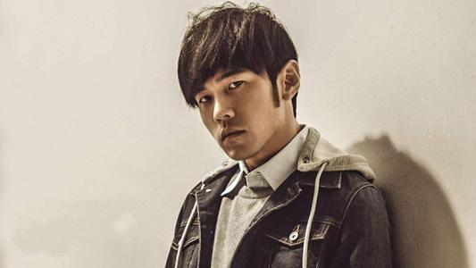

周杰伦
周杰伦（Jay
Chou），1979年1月18日出生于台湾省新北市，祖籍福建省泉州市永春县，中国台湾流行乐男歌手、原创音乐人、演员、导演、编剧，毕业于淡江中学。
主要专辑
- 《周杰伦床边故事》
- 《哎哟，不错哦》
- 《跨时代》
- 《魔杰座》
- 《我很忙》
- 《范特西》
个人成就与荣誉
- 2000年发行首张个人专辑《Jay》
- 2001年发行的专辑《范特西》奠定其融合中西方音乐的风格
- 2002年举行“The One”世界巡回演唱会
- 2003年成为美国《时代周刊》封面人物
- 2004年获得世界音乐大奖中国区最畅销艺人奖
-
2005年凭借动作片《头文字D》获得台湾电影金马奖、香港电影金像奖最佳新人奖
- 2006年起连续三年获得世界音乐大奖中国区最畅销艺人奖
-
2007年自编自导的文艺片《不能说的秘密》获得台湾电影金马奖年度台湾杰出电影奖
- 2008年凭借歌曲《青花瓷》获得第19届金曲奖最佳作曲人奖
-
2009年入选美国CNN评出的“25位亚洲最具影响力的人物”，同年获得第20届金曲奖最佳国语男歌手奖
- 2010年入选美国《Fast Company》评出的“全球百大创意人物”
-
2011年再度获得金曲奖最佳国语男歌手奖，并且第4次获得金曲奖最佳国语专辑奖；同年主演好莱坞电影《青蜂侠》
- 2012年登福布斯中国名人榜榜首
- 2014年发行华语乐坛首张数字音乐专辑《哎呦，不错哦》
- 2019年起举行“嘉年华”世界巡回演唱会
个人专辑汇总
| 年份 |
专辑名称 |
| 2000年 |
Jay |
| 2001年 |
范特西 |
| 2002年 |
八度空间 |
| 2003年 |
叶惠美 |
| 2005年 |
七里香 |
| 2000年 |
Jay |
| 2000年 |
Jay |
| 2000年 |
Jay |
生活照

生平
周杰伦在台湾台北林口长大。父亲周耀中，当时任教于台北县芦洲国中，教授生物；母亲叶惠美则是林口国中美术教师。14岁时父母离异，由父亲担任监护人，年满18岁后选择与母亲共同生活，周杰伦在台湾民视新闻台由胡婉玲主持的节目《台湾演义》专访中，澄清《爸，我回来了》的灵感，只是对社会上家暴现象的感慨，并非指涉父母间的状况，父亲方面的亲戚也曾质疑过他，他还为此向亲戚们澄清，为此误解抱歉过。
周杰伦自小对音乐表现出浓厚的兴趣，并且喜欢模仿歌星、演员表演和变魔术。3岁开始学习钢琴。周杰伦国小时住在台北市光华商场附近，就读忠孝国小。国中时就读金华国中，此时期他的父母因长年争执而决议离婚，使周杰伦的性情大受影响。除了音乐外，周杰伦热爱篮球，他在国中参加篮球队，结识学长陈建州。在同侪中是高手，球场上的表现常受众人围观。